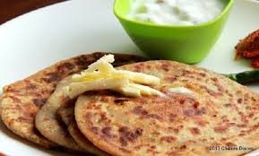
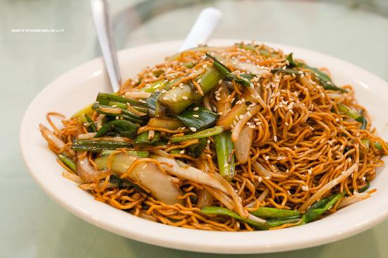
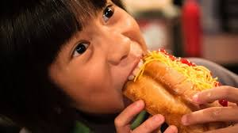

Easy Ordering options
Now paying is as easy as eating...

Order food in the countries

southindian
- 
northindian
- 
Chinese
We understand your hunger

Healthy food healthy life
FoodyPeople is a process of ordering food from a local restaurant or food cooperative through a web page or app. Much like ordering consumer goods online, many of these allow customers to keep accounts with them in order to make frequent ordering convenient. A customer will search for a favorite restaurant, usually filtered via type of cuisine and choose from available items, and choose delivery or pick-up. Payment can be amongst others either by credit card or cash, with the restaurant returning a percentage to the online food company.
Each week, you’ll get 5 new smoothie recipes and all the pre-portioned ingredients you’ll need to make 10 smoothies. The recipes are handcrafted to ensure they’re packed with flavor and nutrients. They say they only use the best produce and superfoods, and focus on working with organic and local farms.
FoodyPeople that reminds of home and have won favourite app more than 4 times now. The service is very great here in Gurgaon, starting with the customer service, I found the team really helpful and quick to reply, they give you the feeling they care about your views and experiences ordering from different restaurants. The delivery time has been spot on for me. I will certainly continue to use the app whenever I want to order food.